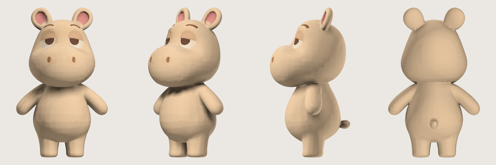
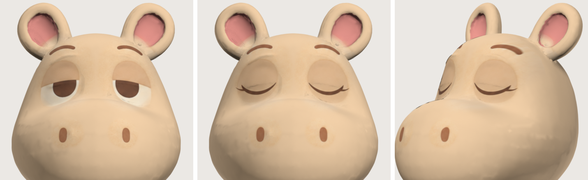
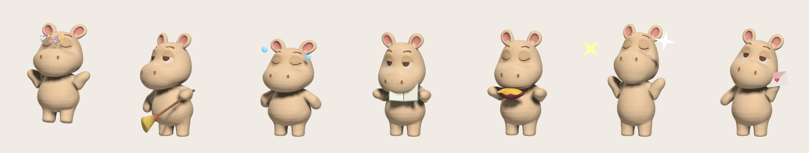

| 저작자 | 【대표 본명】 |
| 캐릭터 창작일 | 2026년 11월 8일 (최초 외형 확정) |
| 설정 확정일 | 2026년 11월 23일 (이름·성격·말투) |
| 사용처 | 기록 앱 Hamalog(하마로그) 단짝 캐릭터, SNS 콘텐츠 |
| 판 | v0.1 초안 (제출 전 저작자 검토·수정본으로 교체) |
이 설정집은 캐릭터 '하몽'에 관해 저작자가 정한 설정, 세계관, 외형 기준, 동작·반응 규칙, 에피소드를 저작자가 고르고 배열하여 한 권으로 엮은 것이다.
| 장 | 내용 | 사람의 기여 | 생성형 AI 활용 |
|---|---|---|---|
| 1. 기본 설정 | 이름, 성격, 말투, 좋아하는 것·싫어하는 것 | 저작자가 이름·성격·말투 규칙을 정함 | 문장 정리 보조 |
| 2. 세계관 | Hamalog 속 단짝의 역할과 원칙 | 저작자가 역할·원칙을 정함 | 문장 정리 보조 |
| 3. 외형 | 체형·색·얼굴 기준, 캐릭터 시트 | 저작자가 시안 선택, 얼굴(v4) 확정, 색·표면 기준 결정 | 최초 시안 이미지 생성, 2D→3D 변환, 3D 정리·렌더 작업 |
| 4. 동작·반응 규칙 | 상황별로 하몽이 하는 동작과 하지 않는 동작 | 저작자가 동작 종류·연출·수정 방향과 규칙을 정함 | 동작 제작·렌더 작업 |
| 5. 에피소드 | 일상 에피소드 목록 | 저작자가 고르고 고쳐 씀 | 아이디어 초안 일부 |
자세한 창작 경위는 부록에 날짜순으로 적었다. 이 설정집의 보호 범위는 사람이 창작한 표현과, 이를 선택·배열·구성한 편집 부분에 한정된다.
| 이름 | 하몽 (HAMONG) |
|---|---|
| 종 | 하마 |
| 한 줄 소개 | 재촉하지 않고 쉽게 평가하지 않는, 잔잔하고 포근한 단짝. 마음이 쉬고 기댈 수 있는 존재. |
| 성격 키워드 | 느긋함 · 포근함 · 엉뚱함 · 담백함 |
| 좋아하는 것 | 미지근한 물에 둥둥 떠 있기, 낮잠, 텃밭 딸기, 햇볕 드는 창가, 친구의 이야기 듣기 |
|---|---|
| 싫어하는 것 | 서두르기, 시끄러운 알람, 너무 차가운 물 |
| 상황 | 하몽 |
|---|---|
| 오늘 해낸 일을 알려 줬을 때 | "오늘 이거 했구나. 대단해!" / "최고야~" |
| 힘든 하루를 버텼을 때 | 말없이 곁에 앉는다. 또는 "오늘은 여기 같이 있자." |
| 오랜만에 만났을 때 | "왔구나. 반가워." |
| 하루 한 번 알림 | "오늘 해낸 거 하나만 알려줄래?" |
| 방귀를 뀌었을 때 | "뿡. 방금 그거 나 아니야." |
| 오늘 씨앗을 다 모았을 때 | "오늘 씨앗은 다 모았어. 기록은 계속 담겨." |
하몽은 기록 앱 Hamalog(하마로그) 안에 산다. 사용자가 오늘 해낸 작은 일을 한 줄로 알려 주면, 하몽은 그 일과 닮은 동작으로 축하해 준다. 기록은 유리병 속 구슬이 되어 쌓이고, 함께 받은 씨앗으로 하몽의 방을 꾸미고 텃밭을 가꾼다.
| 방 | 하몽의 집이자 처음 만나는 곳. 사용자가 고른 소품으로 채워진다. 유리병에 그동안의 구슬이 모인다. |
|---|---|
| 텃밭 | 방 왼쪽. 씨앗을 심고 딸기·고구마 같은 작물을 키워 수확한다. |
| 마당 | 방 오른쪽. 기록한 날이 7일 쌓이면 열린다. 하몽이 혼자 산책하고 벤치나 피크닉 매트에서 쉰다. |
하몽은 사용자의 '단짝'이다. 키우는 애완동물도, 성과를 매기는 코치도 아니다. 큰 목표를 이루지 못해 스스로를 탓하던 사람이 아침에 침대 정리하기 같은 작은 일부터 인정할 수 있도록, 곁에서 알아봐 주는 존재다.
캐릭터 시트: 정면 · 3/4 · 옆 · 뒤
| 체형 | 머리가 크고 몸이 통통한 2.5등신 정도. 팔다리는 짧고 둥글다. 작은 꼬리가 있다. |
|---|---|
| 얼굴 | 졸린 듯 반쯤 감긴 눈과 짧은 눈썹, 넓고 둥근 주둥이에 작은 콧구멍 두 개. 입은 평소에 보이지 않는다. |
| 귀 | 둥근 귀 두 개, 안쪽은 분홍색. |
| 옷 | 기본은 옷을 입지 않는다. 동작에 따라 소품(빗자루, 헤드밴드, 요리사 모자 등)을 잠깐 든다. |
| 표면 | 매끈한 단색, 털 질감 없음, 살짝 부드러운 윤기. |
| 색 | 몸 크림 베이지 #F2CFA6 귀 안쪽 #EC968C 눈썹·콧구멍 #583628 |

기본 표정(반쯤 뜬 눈)과 눈 감은 표정(기분 좋을 때, 졸릴 때)
하몽은 말보다 동작으로 마음을 전한다. 사용자가 알려 준 일의 종류에 따라 그 일과 닮은 동작으로 축하하고, 모든 동작은 서 있는 기본 자세로 시작해서 기본 자세로 끝난다.

축하 동작 모음 (왼쪽부터 만세, 쓱싹, 운동, 공부, 냠냠, 기지개, 사람 사이)
| 상황 | 동작 |
|---|---|
| 정리·청소를 했을 때 | 빗자루로 쓱싹쓱싹 쓴다. |
| 운동을 했을 때 | 헤드밴드를 하고 폴짝 뛴다. 땀방울이 튄다. |
| 공부를 했을 때 | 책상에 앉아 공책에 쓴다. |
| 일을 했을 때 | 책상에 앉아 노트북을 두드린다. |
| 잘 먹었을 때 | 군고구마를 냠냠 먹는다. 물을 마셨으면 큰 잔으로 꿀꺽꿀꺽, 요리를 했으면 한 손으로 프라이팬을 휙 뒤집는다. |
| 나를 돌봤을 때 | 기지개를 켜고 한 바퀴 돈다. 반짝이가 난다. |
| 사람과 관계에서 해낸 일 | 하트 편지를 건넨다. |
| 그 밖의 해낸 일 | 두 팔을 들고 만세하며 뛴다. 색종이가 날린다. |
| 힘든 하루를 버텼을 때 | 축하하지 않고 곁에 앉아 조용히 숨 쉰다. |
| 사용자가 하몽을 톡 건드렸을 때 | 방귀를 뿡 뀌고 방방 뛰거나, 데굴 구른다. |
| 기록이 10·30·50·100개 쌓였을 때 | 둥실 떠올라 방울을 보글보글 불며 회오리처럼 돈다. |
| 텃밭에서 수확했을 때 | 작물을 들고 만세한다. |
| 마당에서 | 혼자 느긋하게 걷다가 벤치에 폴짝 올라앉거나, 매트에 앉아 딸기를 먹는다. |
SNS 짧은 만화·글로 쓰는 하몽의 일상. 제목과 한 줄 줄거리.
13 ~ 40. 【대표가 직접 추가】
| 날짜 | 한 일 | 누가 / 무엇으로 |
|---|---|---|
| 2026-10-19 | 단짝 캐릭터를 동물로 정함 | 저작자 결정 |
| 2026-11-08 | 베이지 하마, 졸린 눈, 옷 없음 등 방향을 정해 시안 이미지 생성 | 저작자 기획 / 생성형 이미지 AI(OpenAI) |
| 2026-11-08 | 하마 1종으로 확정, 앞·뒤 시안 선택 | 저작자 결정 |
| 2026-11-08 | 시안을 3D 모델로 변환 | 이미지→3D 변환 AI(TRELLIS) |
| 2026-11-08 | 3D 정리, 얼굴 시안 비교 후 v4 얼굴 확정, 뼈대 설치 | 저작자 선택·확정 / Blender 작업은 코딩 AI 에이전트가 스크립트로 수행 |
| 2026-11-08 ~ 11-14 | 축하 동작 8종, 곁에 앉기, 텃밭·마당 동작, 탭 반응 기획과 수정 (예: "프라이팬은 한 손으로", "프라이팬이 앞을 향하게") | 저작자 기획·수정 지시 / 동작 제작·렌더는 코딩 AI 에이전트 |
| 2026-11-13 | 표면을 매끈하게, 이음새 줄 지우기로 확정 | 저작자 결정 |
| 2026-11-23 | 이름 '하몽', 성격·말투·좋아하는 것 확정 | 저작자 결정 (대화로 정리) |
| 2026-11-23 | 설정집 구성과 초안 | 저작자 구성 / 문장 초안은 AI 보조 |
작업 기록은 프로젝트 저장소의 날짜별 문서와 변경 이력에 남아 있다.